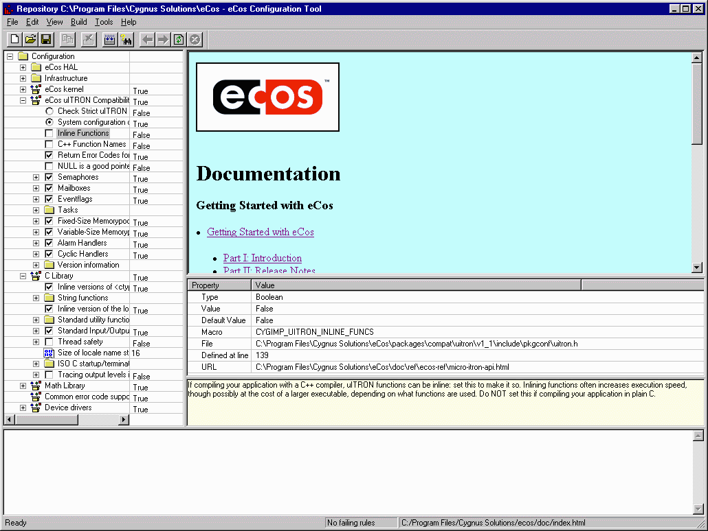

You can get context-sensitive help for the Configuration Tool itself:
By hitting F1. This will display an HTML page appropriate to the currently focused pane.
By clicking the Help buttons in dialog boxes.

The text in the short description window will change with the selection in the Configuration Pane.